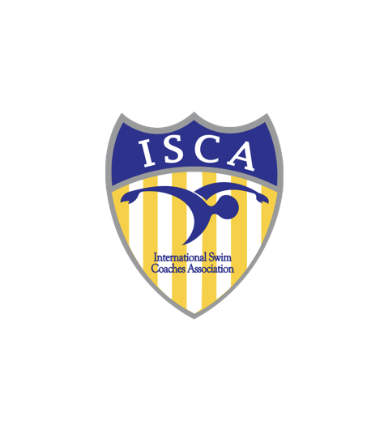
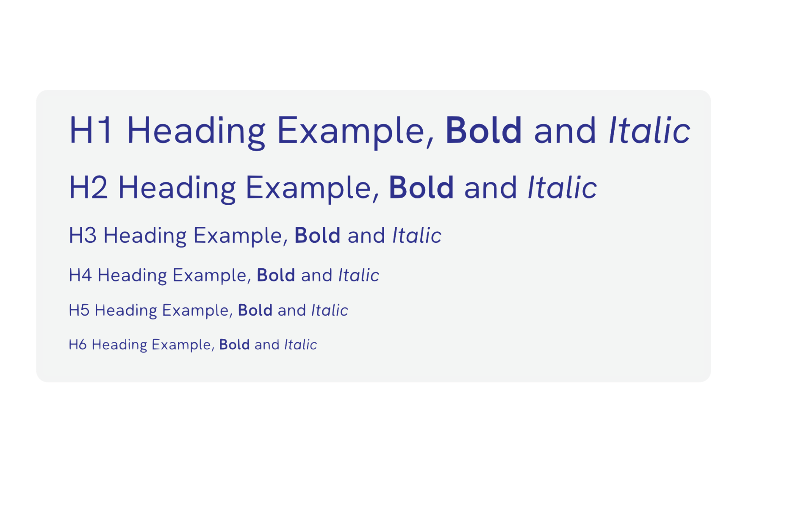
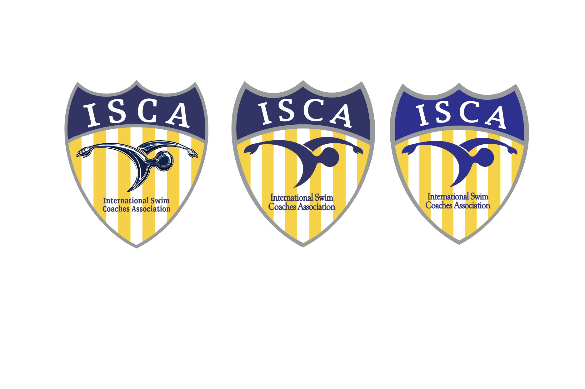
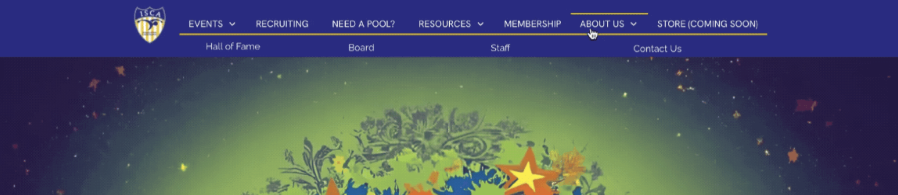
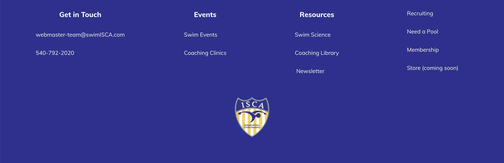
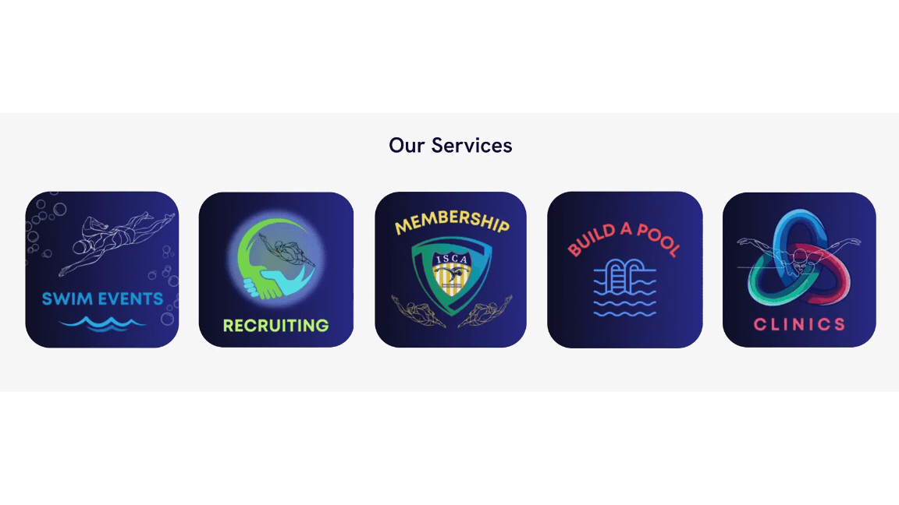
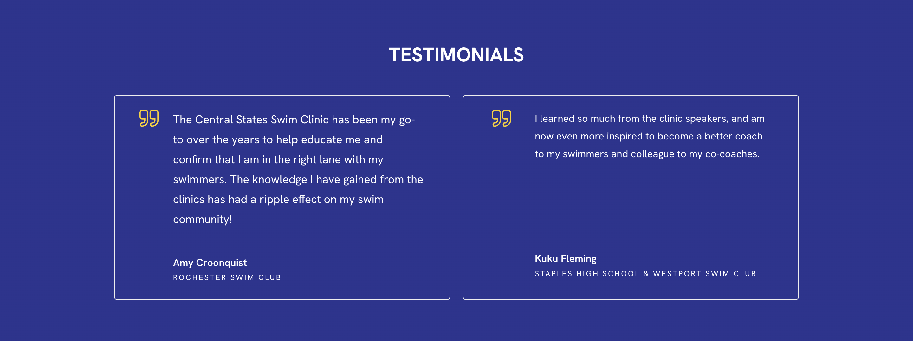
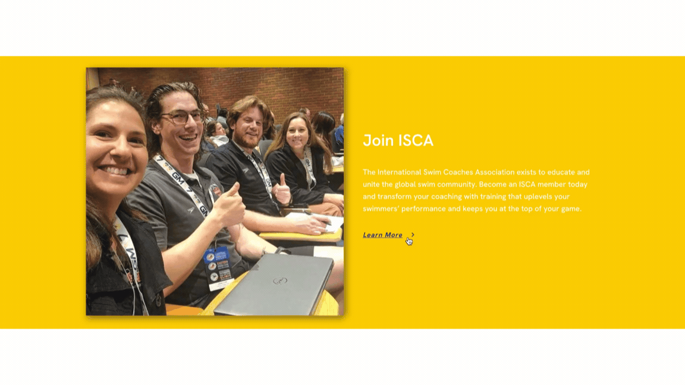
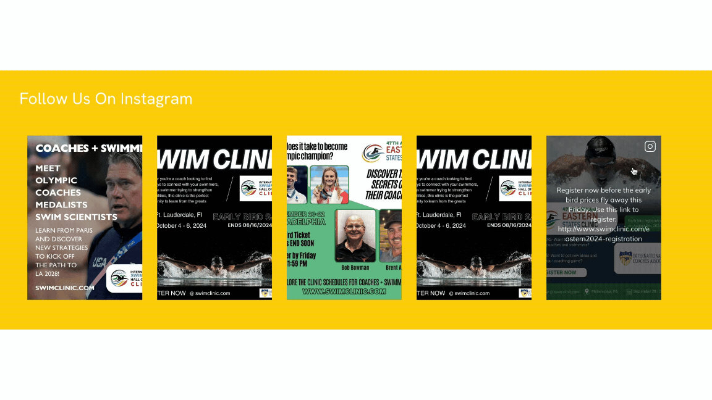

ISCA
Redesigning the ISCA website to clarify coaching resources, highlight events, and unify branding
Challenge
ISCA’s website lacked clear hierarchy, consistent branding, and intuitive navigation, making it difficult for users to find events, understand offerings, and complete key actions like registration.
Outcome
Designed a unified, service-oriented web experience that restructures navigation around user needs, clarifies event discovery, and simplifies registration flows: improving usability, engagement, and long-term scalability.
Purpose
During my eight-week summer internship with the International Swim Coaches Association (ISCA), I led a full website redesign to improve usability, event discoverability, and brand cohesion. The goal was to modernize the interface and make ISCA’s services—meets, memberships, workshops, and coaching resources—clear and easy to engage with.


What It Does
The redesigned ISCA site organizes offerings into clear clusters and introduces a unified, professional brand system. Visitors can browse events, register, and access coaching resources seamlessly across devices with improved hierarchy and flow.
What the Site Addresses
The original ISCA website had inconsistent styling, unclear hierarchy, and difficult navigation. Key services were buried under menus, and the color palette lacked consistency. The new design centralizes navigation, surfaces core services, and simplifies registration and subscriptions.
How might I create a cohesive, service-driven web experience that helps the ISCA community discover and engage with events and resources more efficiently?
Objectives
- Redesign homepage and navigation to highlight services and events.
- Develop a unified brand system aligned with ISCA’s identity.
- Simplify registration and subscription flows.
- Build reusable, accessible components for maintainability.
Research
Research Goals
- Assess usability and content hierarchy of the existing site.
- Analyze brand consistency across pages and social media.
- Understand priorities of coaches, parents, and swimmers when visiting the site.
Brand System
The updated system centers on ISCA Blue (#2E3191) and ISCA Yellow (#FBCD0D), balancing energy and clarity.
- Typography: Hanken Grotesk for legibility and confidence.
- Color Palette: Deep blue foundation, yellow for action states.
- Logo Usage: Refined rules for visibility across backgrounds.


Navigation Audit
I mapped redundant and hidden pathways to simplify structure. Navigation was regrouped around audience needs—Coaches, Parents, and Swimmers—and mirrored header/footer menus improved consistency.


Design Prototype
Information Architecture
I restructured the homepage into service-based clusters and grouped navigation items by mental models, improving search time and first-click success.
Advertising Events
A dynamic event carousel automatically highlights upcoming meets with branded overlays and AI-generated backgrounds.

Testimonials & Registration
Registration for meets and workshops was condensed and clarified, while a linear testimonial section reinforces trust.


Socials & Subscriptions
The new site integrates social proof and engagement directly into its design:
- Newsletter Modal: Lightweight pop-up for sign-ups.
- Embedded Feeds: Instagram and YouTube integration.
- Persistent Subscription Bar: One-click registration from any page.


Planning & Implementation
This redesign was guided by a detailed collaborative meetings (July–August 2024) discussing homepage layout adjustments, event-page flow, and branding refinements. Below is a summary of key directives and updates implemented throughout the ISCA website.
Homepage Updates
- Main Banner: Removed left column and expanded the event carousel. Implemented rotating banners for six featured events (East Coast Open Water Festival, Fall Classic, GAGC, Eastern States Clinic, ISHOF Clinic, and Central States Clinic).
- Event Icons: Refined logo presentation with black and gray background variants to test readability. All logos are vertically and horizontally centered.
- Member Section: Introduced “Join ISCA” call-to-action:
“The International Swim Coaches Association exists to educate and unite the global swim community. Become an ISCA member today and transform your coaching with training that uplevels your swimmers’ performance and keeps you at the top of your game.”
Added Learn More button linking to membership details. - Testimonials: Curated new testimonials from Central States Swim Clinic:
- “The Central States Swim Clinic has been my go-to over the years to help educate me and confirm that I am in the right lane with my swimmers.”
- “I learned so much from the clinic speakers, and am now even more inspired to become a better coach to my swimmers.”
- Vision / Mission → Membership: Reframed as an invitation to join ISCA, featuring updated copy and imagery representing diversity in coaching.
- Newsletter Section: Split into two columns—newsletter sign-up on one side, YouTube subscription CTA on the other. Includes livestream promo image and subscription link.
- IG Feed: Reformatted images into smaller square tiles for consistency.
Event Page Enhancements
- Introduced high-contrast color accents drawn from event logos for visual differentiation.
- Ensured text legibility with updated dark-orange header styles on lighter backgrounds.
- Updated top-level link order:
- Download Meet Info
- Attending Teams
- Sign Up for Meet Emails
- Interested in Officiating?
- Added duplicate REGISTER TODAY buttons at top and bottom of every event page for fast access.
- Created event-specific accent color themes for Fall Classic, East Coast Open Water Fest, January Classic, Senior Cup, and East Coast Elite Showcase.
Registration + Logistics Section
Formerly titled “Fees & Bookings,” this section was restructured for clarity and consistency:
- Registration: Updated text for clarity:
Follow these steps to register your team. Submit the registration form, make your $200 deposit online, and pay your remaining balance at the meet via check payable to ISCA.
Navigation & Structure
- Introduced dropdown-based navigation for Events, Clinics, Recruiting, Resources, Membership, and About.
- New landing pages created for:
- Swim Events (overview with links to individual meets)
- Clinics (overview with external link to SwimClinic.com)
- Recruiting (overview linking to PremierAquaticStaffing.com)
- Coaching Library (dual access for members/non-members)
- Board, Staff, and Contact pages with updated structure
- Implemented consistent footer mirroring top navigation for orientation.
Popup and Newsletter Experience
- Replaced homepage popup with email signup modal encouraging subscription:
“Join our mailing list to hear about our latest meets, clinics, coaching jobs, and educational resources.”
- Added direct YouTube subscription integration via channel link.
Design Feedback Summary
- Tested black, gray, and white backgrounds for event logos to find highest legibility and contrast.
- Added subtle spacing transitions between blue and black homepage sections for balance.
- Optimized testimonial layout and removed redundant header text (“What our clients say…”).
- Resized Instagram feed to consistent square ratio for improved rhythm and scannability.
Key Deliverables Built
- Homepage: dynamic carousel, membership CTA, testimonial module, IG feed, and dual-column signup section.
- Event Pages: consistent registration and logistics framework.
- Landing Pages: Swim Events, Clinics, Recruiting, Membership, About, Contact.
- Component Library: reusable banner, CTA, modal, and tile systems for easy maintenance.
These deliverables collectively brought ISCA’s visual and functional presence in line with its mission to connect and empower the global swim community through a clear, accessible, and engaging digital experience.
Reflections & What’s Next
- Expand component library for future subpages and events.
- Integrate analytics to measure engagement and refine flows.
- Provide update documentation for non-technical staff.
Takeaways
- Consistency builds credibility: A unified system improved trust and perception.
- Lead with community value: Surfacing meets and memberships reduced confusion.
- Navigation should reflect user goals: Grouping by audience improved accuracy and retention.
- Design for longevity: Reusable components ensure easy maintenance.